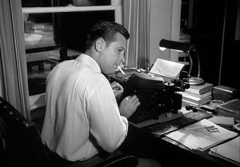
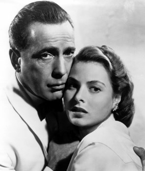

|
O Roteiro |
|
|  |
Argumentista, guionista ou roteirista é quem escreve o roteiro de um filme, programa de televisão ou HQ/banda desenhada.
O roteirista cria uma história original ou adapta uma já existente. O roteiro adaptado, em geral, consiste na transposição de obras literárias para o cinema ou televisão. O roteirista realiza roteiros inclusive para filmes documentários. |
|
Melhores roteiros do cinema norte-americano |
|
|  |
Numa escolha feita em 2006, os membros do Sindicato dos Roteiristas da América selecionaram, dentre mais de mil e quatrocentos filmes, os 101 melhores roteiros. Os dez melhores roteiros eleitos foram: 1 - Casablanca, roteiro adaptado por Julius e Philip Epstein (1942). 2 - The Godfather (br: O Poderoso Chefão; pt: O Padrinho), de Mario Puzo e Francis Ford Coppola (1972) 3 - Chinatown, de Robert Towne (1974 - dirigido por Roman Polanski). 4 - Citizen Kane (br/pt: Cidadão Kane), de Herman J. Mankiewicz e Orson Welles (1941) 5 - All About Eve (br: A Malvada), de Joseph L. Mankiewicz (1950) 6 - Annie Hall (br: Noivo Neurótico, Noiva Nervosa), de Woody Allen e Marshall Brickman (1977) 7 - Sunset Boulevard (br/pt: Crepúsculo dos Deuses), de Charles Brackett, Billy Wilder e D.M. Marshman Jr (1950) 8 - Network (br: Rede de Intrigas / pt: Escândalo na TV), por Paddy Chayefsky (1976) 9 - Some Like It Hot (br: Quanto Mais Quente Melhor), história de Robert Thoeren e Michael Logan e roteiro por Billy Wilder e I. A. L. Diamond (1959) 10 - The Godfather: Part II (br: O Poderoso Chefão II), de Mario Puzo e Francis Ford Coppola (1974) Os roteiristas que tiveram mais filmes escolhidos entre os cento e um nomeados, com quatro cada um, foram Woody Allen, Francis Ford Coppola e Billy Wilder. Com três nomeações cada ficaram Charlie Kaufman, William Goldman e John Huston |